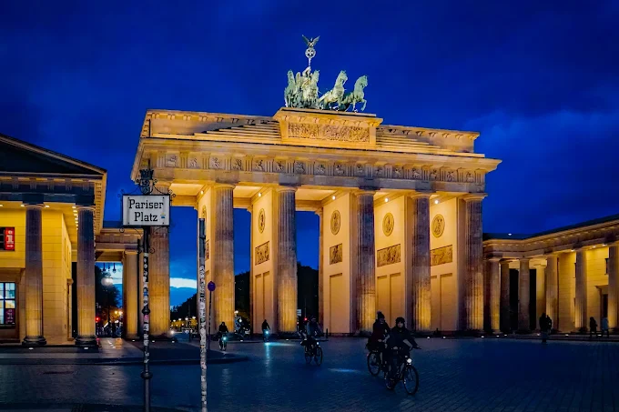

Brendenburg Kapısı
Brandenbur Kapısı, Almanya’nın kuzeydoğusunda yer alan bir eyalettir. Başkenti Potsdam’dır. Berlin’i çevreler ancak Berlin’den ayrı bir eyalettir. Geniş ormanları, gölleri ve tarihi yapılarıyla bilinir. Almanya’nın yüzölçümü bakımından büyük, nüfus bakımından seyrek eyaletlerinden biridir.
Neuschwanstein Şatosu

Neuschwanstein Şatosu, Almanya’nın güneyinde, Bavyera eyaletinde yer alır. 19. yüzyılda Kral II. Ludwig tarafından yaptırılmıştır. Masalsı görüntüsüyle ünlüdür ve Disney’in “Uyuyan Güzel” şatosuna ilham kaynağı olmuştur. Alplere yakın konumdadır ve her yıl milyonlarca turist tarafından ziyaret edilir.
Köln Katedrali

Köln Katedrali, Almanya'nın batısındaki Köln kentinde yer alır. Gotik mimarinin başyapıtlarındandır. UNESCO Dünya Mirası Listesi’nde yer alır ve her yıl milyonlarca turist tarafından ziyaret edilir.